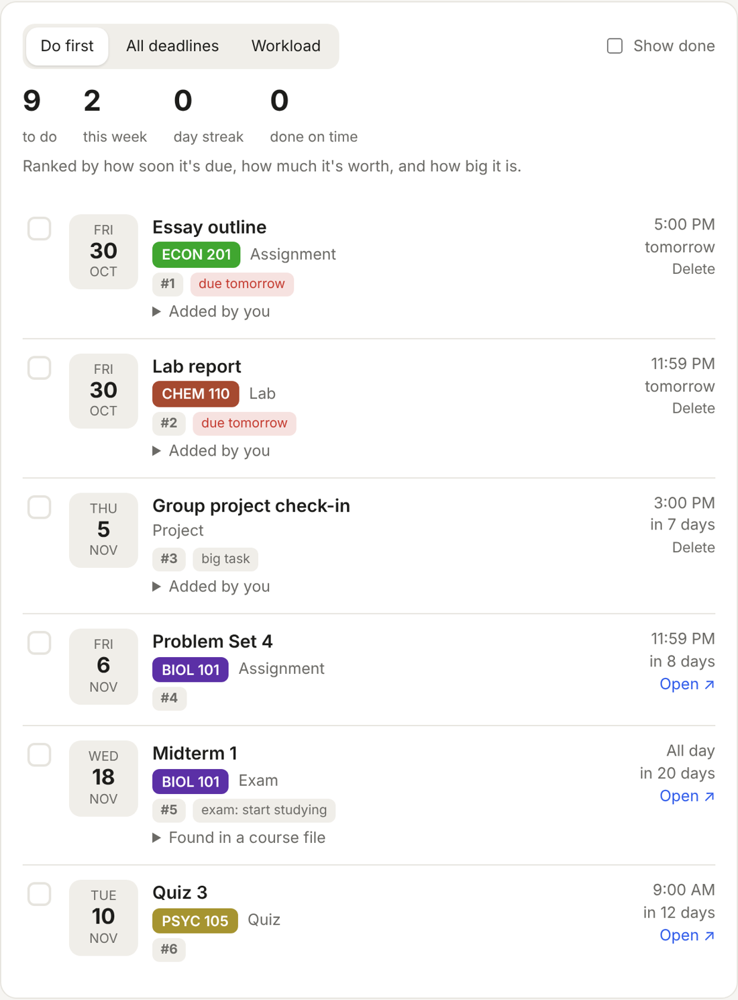
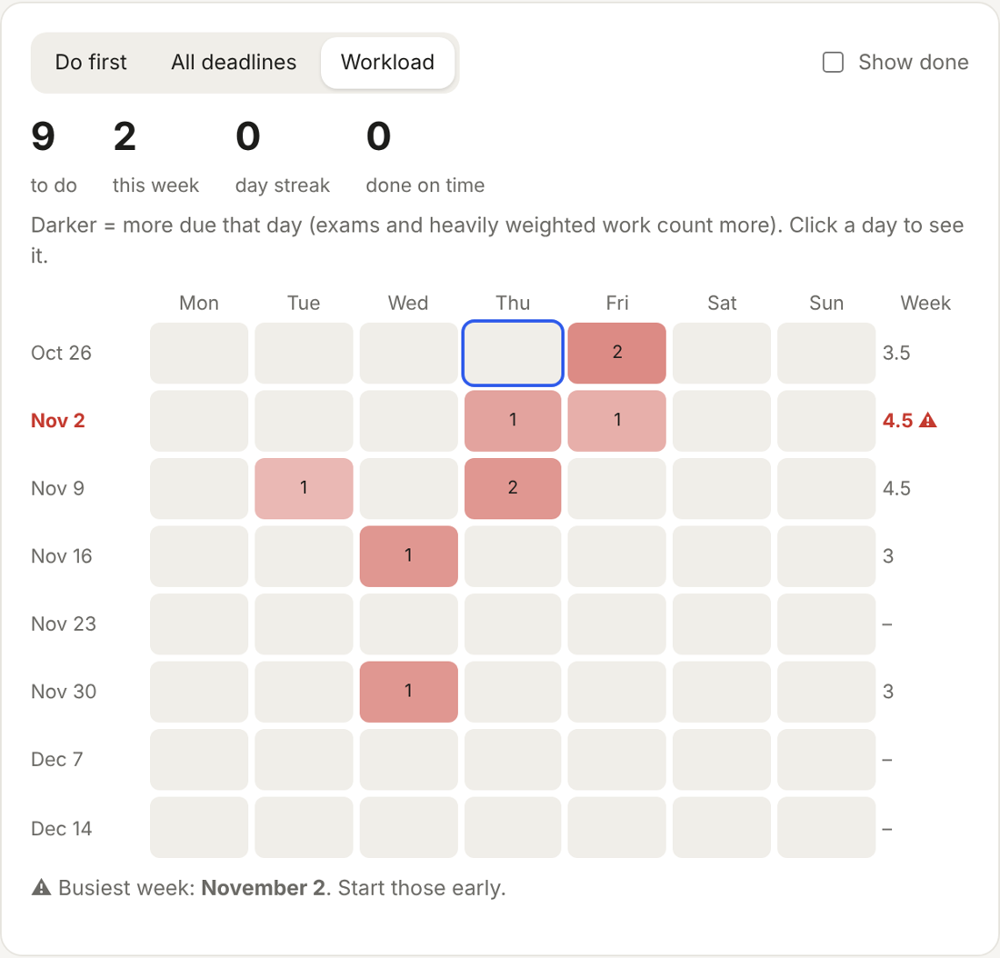

Deadline Hub reads your Moodle or Canvas courses, including the syllabus and course files, finds every due date, and puts them on your phone with reminders. Free, and it runs on your own computer.
Download for Windows

The workload view shows the next two months at a glance and flags your busiest week, so you can start early instead of pulling all-nighters.
Deadline Hub never sees your password. You sign in on your school's own Moodle page, and Moodle gives the app the same kind of key the official Moodle phone app uses. That key and all your data stay on your computer. Nothing is sent to us or to any AI service.
Yes. Windows shows this for new apps that haven't built up a download history yet. Click More info, then Run anyway. On a Mac, right-click the app and choose Open the first time.
Canvas: paste an access token from your Canvas settings (the app shows you where). D2L, Blackboard, Google Classroom and others: paste your course calendar's subscribe link.
No. Deadline Hub starts with your computer and sits as a small icon by the clock, syncing every few hours. You can turn this off in the app.
Windows: Settings → Apps → Deadline Hub → Uninstall. Mac: drag it from Applications to the Trash.